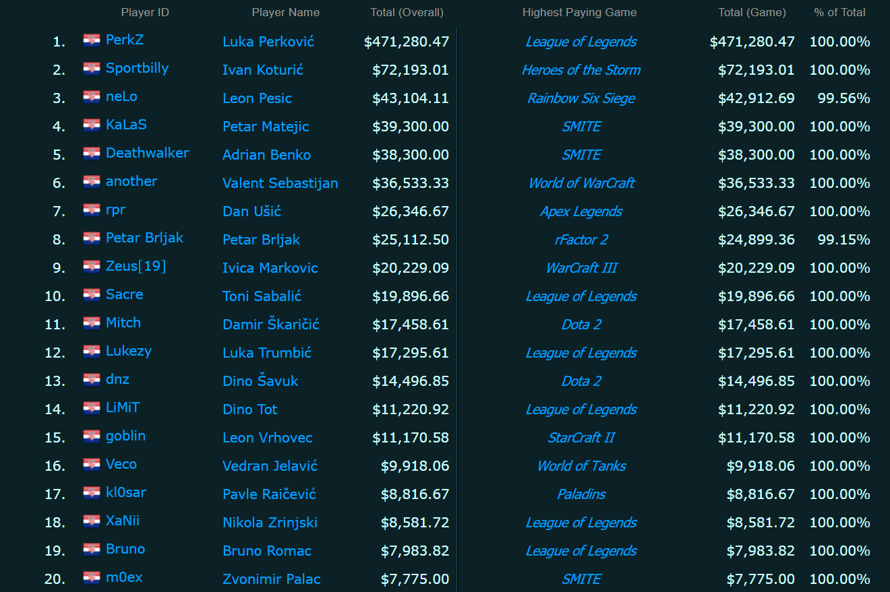

E-sports je oblik sportskog natjecanja u video igrama. Iako je natjecanje i rivalstvo oduvijek bilo dio video igara, sva su ona bila amaterske prirode sve do kasnih 2000-ih. Uz pojavu raznih livestream servisa profesionalni igrači konačno su dobili svijetlo reflektora, a sve brojniji navijači platforme na kojima mogu pratiti sva natjecanja. No pravi procvat e-sports je doživio u zadnjih svega 10 godina, kada su mnogi developeri počeli kreirati igre s ciljem da postanu e-sports naslovi, te organizirali i sponzorirali mnoge turnire i druge specijalne događaje vezane uz svoje igre.
Dvije najzaslužnije igre za procvat e-sportsa svakako su League of Legends (LoL) i Dota 2 pa nije iznenađujuće kako je multiplayer online battle arena, odnosno MOBA, najgledaniji žanr kada je e-sports u pitanju. Prema statistikama, finale Dota International turnira u 2019. godini gledalo je 1.968.497 ljudi, dok je ovogodišnji League of Legends Worlds Championship u finalu pratilo čak 3.882.252 ljudi.
Osim njih veoma su popularni sljedeći žanrovi i igre:
Top 10 najgledanijih igri 2019. godine u satima.
Najranije poznato natjecanje u video igrama održalo se 19. listopada 1972. godine na sveučilištu Stanford. Igra u pitanju bila je Spacewar!, a kako joj samo ime govori, radilo se o dva svemirska broda kojima je u cilju bilo uništiti protivnički brod prije nego što unište svoj udarivši u protivnički torpedo, protivnički svemirski brod ili u planet. Glavna nagrada "Intergalaktičke Spacewar olimpijade" bila je godišnja pretplata na časopis Rolling Stone.
Dvadeset godine poslije, pojavom igre Street Fighter II 1991. godine, populariziran je koncept direktnog natjecanja između 2 igrača, koje se sve do tada baziralo na high scoreu, odnosno na tome tko će ostvariti veći broj bodova u pojedinoj igri. Popularizacijom borilačkih igri, 1996. godine nastao je jedan od najvećih i najprepoznatljivijih turnira današnjice, Evolution Championship Series (EVO).
Mnoge su igre uvelike profitirale povezivanjem na internet, a posebice računalne igre poput Counter-Strikea, Quakea, Starcrafta i Warcrafta, koje su bile standardna postava mnogih novonastalih turnira.
Kombinacijom financijske krize u Aziji 1997. godine i pojavom internet cafea/LAN gaming centara, e-sports u Južnoj Koreji je procvao. Dva televizijska kanala 24 sata dnevno prenosila su sva Starcraft i Warcraft III događanja. Na zapadu se e-sports širio nešto sporije, no jačanjem internetske infrastrukture, nastajanjem boljeg hardwarea i softwarea, e-sports manija zahvaća cijeli svijet.
E-sports u Hrvatskoj još je u povojima. Rastom popularnosti e-sportsa u regiji pokušali smo ostati u korak s trendovima te kreirati Hrvatsku e-sports ligu. Pojavom organizacija poput ESL Adria i Esports Balkan League oko 2016. godine, hrvatski su igrači konačno mogli sudjelovati u turnirima značajnijih novčanih svota, međutim zbog rijetko organiziranih turnira te i dalje premalih financijskih nagrada, od e-sportsa u hrvatskoj nije se moglo živjeti.
Najveći turnir u Hrvatskoj, imena Zagreb Gaming Championship, organiziran je u Areni Zagreb u sklopu Croatia Music Weeka, a održao se 02. i 03. siječnja 2017. godine. Online kvalifikacijski turniri, prijenos finala turnira uživo na streaming platformama poput Twitcha te bogati nagradni fondovi, koji su za League of Legends turnir iznosili 5.500€, a za Hearthstone čak 10.000€, bili su dovoljni da zainteresiraju brojne, kako domaće, tako i igrače iz regije. Među igračima su se tako našli Slovenci, Bosanci, Srbi, ali i Mađari i Talijani. Ipak, unatoč zanimanju cijele regije, turnir se organizatorima ispostavio kao gubitak te se nakon toga u Hrvatskoj nije održao niti jedan turnir sličnih razmjera.
Ipak, nije nemoguće biti hrvat i uspjeti u e-sportsu. Nekolicina naših igrača probila se na Europsku, pa i svjetsku scenu, pa je, barem prema javno dostupnim informacijama, preko 1.000$ nagrade od turnira osvojilo 54 Hrvata, njih svega 15 probija cifru od 10.000$, dok je Luka Perković, poznatiji kao Perkz, jedini koji je probio cifru od $100.000, odnosno, procjenjuje se da je od turnira do sada zaradio $471.280,47.
| Informacije o turnirima u Hrvatskoj | ||||
| Igre s aktualnim turnirima: | Zbog situacije s Covid-19, ali i stanja e-sportsa u regiji, teško je pratiti nadolazeće događaje. Unatoč tome, u nastavku su stranice na kojima pouzdano možete učiniti upravo to: | |||
| CS:GO | Hearthstone | |||
| Tekken | Fortnite | |||
| PES | Overwatch | hcl.hr | ||
| FIFA | Starcraft II | |||
| LoL | CoD | adriaesports.net | ||
| Dota 2 | Rocket League | |||